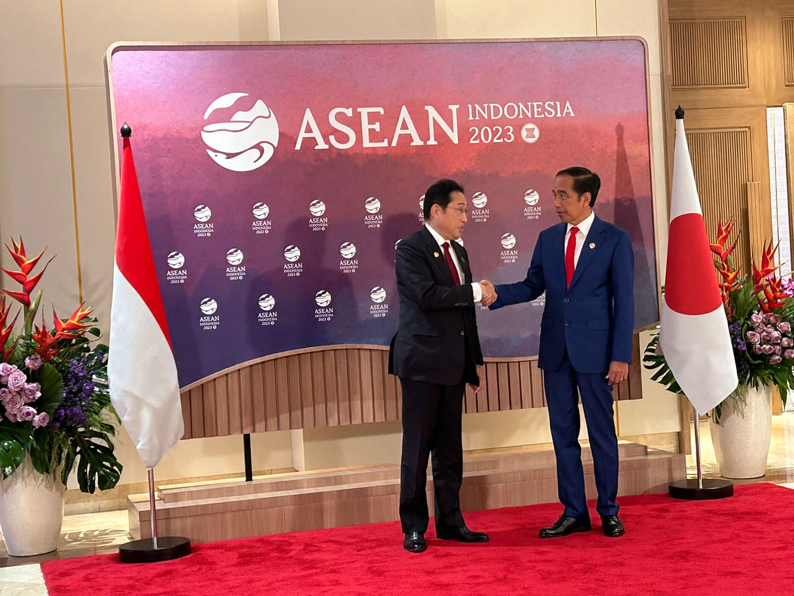

Dalam kerjasama bilateral, Indonesia menjalin kemitraan dengan berbagai negara untuk memajukan kesetaraan gender. Contohnya, kerja sama dengan Australia melalui program MAMPU (Kemitraan Australia-Indonesia untuk Kesetaraan Gender dan Pemberdayaan Perempuan). Program ini berfokus pada meningkatkan akses perempuan terhadap layanan publik, seperti kesehatan, pendidikan, dan keadilan, terutama di wilayah terpencil dan marginal.
Selain itu, Indonesia juga bekerja sama dengan Jepang dalam program pemberdayaan perempuan di sektor usaha kecil dan menengah (UKM). Melalui pelatihan dan pendanaan mikro, program ini membantu perempuan Indonesia untuk lebih mandiri secara finansial dan berperan aktif dalam ekonomi keluarga serta masyarakat.
Kerjasama dengan Swedia juga menjadi contoh lain. Indonesia dan Swedia berbagi pengalaman serta kebijakan terkait perempuan di bidang teknologi dan inovasi. Ini bertujuan untuk mendorong partisipasi perempuan dalam bidang STEM (science, technology, engineering, and mathematics), yang selama ini masih didominasi oleh laki-laki.